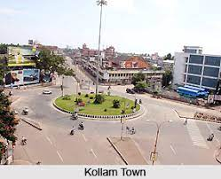
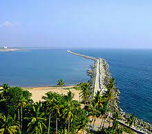

Kollam is a city in the state of Kerala, on India's Malabar Coast. It’s known as a trade hub and for its beaches, like lively Kollam and secluded Thirumullavaram. Sardar Vallabhbhai Patel Police Museum has artifacts tracing the history of the police force. Nearby, Ashtamudi Lake is a gateway to the Kerala backwaters, a network of waterways rich with vegetation. The striped 1902 Tangasseri Lighthouse has ocean views. ― Google
Weather: 28°C, Wind W at 5 km/h, 83% Humidity More on weather.com
PIN: 691 XXX
Demonym(s): Kollamite, Kollathukaaran, Kollamkaran
District: Kollam
Elevation: 3 m (10 ft)
Established: 1099
Region: South India
|
 |  | |
| Jatayu Earth's Center | Sree Bhoothanatha Temple | Kollam City | Thangasseri Beach |